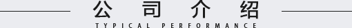

公司介绍
公司介绍

企业介绍：
河南省建设集团有限公司由河南省建设总公司整体改制成立，河南省建设总公司成立于1986年，前身是河南省建筑工程局，1986年改组为河南省建设总公司，2009年整体改制为河南省建设集团有限公司，隶属于河南省人民政府国有资产监督管理委员会，是中国建筑业协会、中国施工企业管理协会、河南省建筑业协会成员单位，河南省工程建设协会副理事长单位、河南省建设信息协会副理事长单位。公司具有房屋建筑施工、市政公用工程总承包壹级资质，公路工程总承包二级资质。具有特种专业（结构补强 、纠偏平移）工程、地基基础、机电设备安装、土石方专业承包、防水工程、钢结构工程等专业资质。率先贯彻并通过质量、环境、职业健康安全认证，数十次荣获国家、省、市优秀施工企业、质量管理先进企业、安全管理先进企业等荣誉称号，十多人荣获国家优秀项目经理、全国用户满意企业等荣誉称号
业务范围：
工业建筑加固 、民用建筑加固、 商业建筑加固改造、 高层建筑纠偏加固、 古代建筑修缮加固、 桥梁工程加固、 增加直梯、扶梯、观光电梯 、砖混结构加固、 框架结构加固、 钢结构加固、 结构抗震加固、 质量缺陷处理、 建筑结构加固方案设计、 结构裂缝修复、 建筑病害治理、碳纤维加固、 粘钢、包钢、植筋等、 静力拆除、开洞、地基处理、 建筑纠偏和平移、 建筑风水调整等